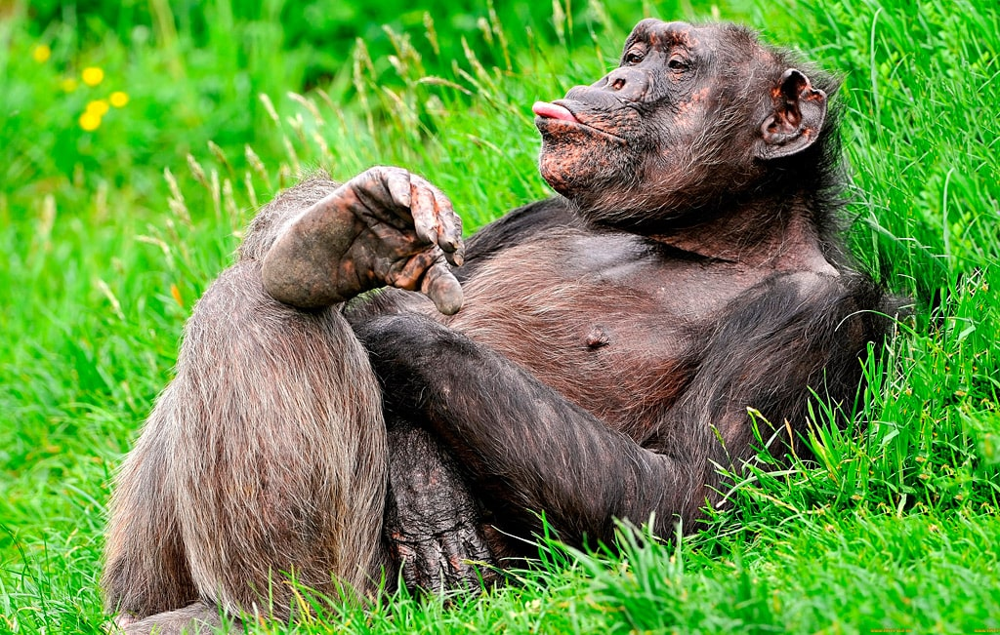

Удивительные факты о животных будут касаться их жизнедеятельности, повадок, внешности, инстинктов и прочих факторов. Нашу планету невозможно представить без представителей животного мира, которые наполняют ее практически во всех уголках Земли.
Итак, перед вами самые интересные факты о животных.

20 удивительных фактов о животных
Гигантские муравьеды носят собственных детенышей на спине до тех пор, пока не забеременеют в очередной раз.
Рык льва можно услышать на расстоянии до 8 километров.
Красноперый опах – единственная рыба, обладающая способностью к терморегуляции. Температура ее тела выше окружающей среды на 5 °С. Любопытно, что красноперый опах достигает в длину 2-х метров, при весе около 100 кг.
Знаете ли вы, что тигр (см. интересные факты о тиграх) видит примерно в 6 раз лучше, чем человек?
Чтобы захмелеть, шимпанзе употребляют пальмовое вино.
Пчелы вида «Tetragonula carbonaria» обустраивают свои гнезда по спирали.
Носуха, из семейства енотовых, имеет невероятно подвижные лодыжки, которые могут поворачиваться на 180⁰. В результате, это удивительное животное может сползать с дерева как передом, так и спиной.
Собака видит в своем хозяине вожака стаи, которому необходимо подчиняться.
Основная часть травоядных животных не различает цветов, поэтому оранжевый и зеленый цвета для них являются идентичными. Благодаря этому, тиграм, к примеру, удается оставаться незамеченными на фоне зелени.
Кошки могут издавать свыше сотни разных звуков, тогда как собаки владеют только около 10 звуками.
Муравьиный меланерпес выдалбливает в стволах мертвых деревьев мини-кладовые для хранения желудей, причем для каждого желудя отдельную кладовую. Интересен факт, что в одной сосне удалось обнаружить до 60 000 спрятанных плодов!
У хищников глаза находятся впереди, чтобы видеть добычу, а у травоядных животных – по бокам, чтобы своевременно заметить приближающегося хищника.
Рисунок пятен у каждого леопарда индивидуален, вследствие чего на планете нет двух одинаковых животных.
Все гепарды одинаковые. В этом вы сможете убедиться взглянув на их морды.
Кошки могут безопасно для своего здоровья употреблять морскую воду, так как их почки способны фильтровать соль и выводить ее естественным путем.
Сытый крокодил (см. интересные факты о крокодилах) никогда не нападет на жертву, даже когда та находится рядом с ним.
В рацион аиста-китоглава входят змеи, рыбы, черепахи и даже маленькие крокодилы.
Капуцины писают на свои лапки, чтобы умыться.
По утверждению ученых, обезьяны умеют с помощью палки измерять высоту уровня воды.